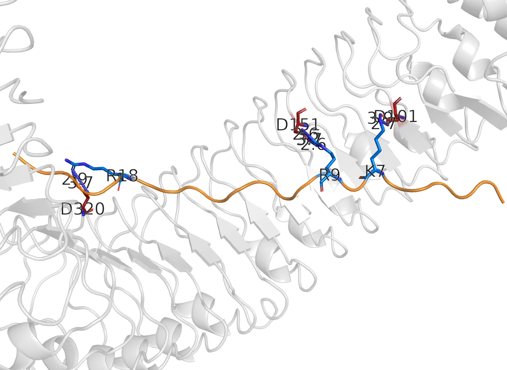
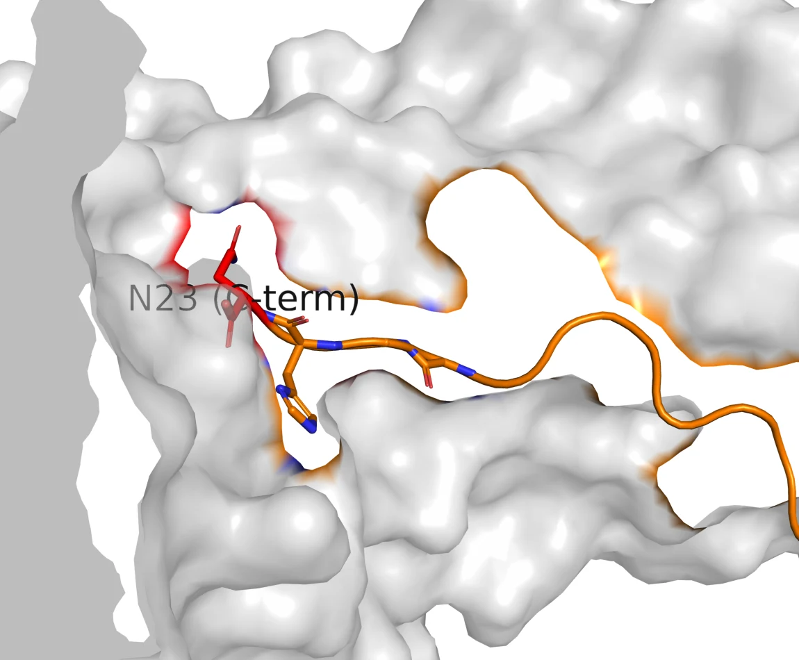

The design target is a 23-mer that has to clear two receptors and a secretion pore
BoPep4 is a plant elicitor peptide from Brassica oleracea, mature
sequence GILIGSKKRPREPHSSGKPGGHN. Plants release peptides of this
family when they are wounded or stressed; the receptor kinases PEPR1 and PEPR2
read them, recruit the co-receptor BAK1, and switch on defence and
stress-tolerance responses [1, 3]. ReLeaf asks Bacillus subtilis
to secrete one of these peptides into the root zone, so the molecule has to
satisfy two judges at once: the receptor at the far end, and the secretion
machinery it has to leave the cell through.
Those two judges disagree. The receptor wants the C-terminal two thirds intact and untouched. The secretion pathway wants a short, uncharged mature N-terminus at the signal-peptidase junction, and it does not care what happens downstream. Nearly every design decision on this page comes out of that disagreement, and the design space is small enough to enumerate: twenty-three positions, a handful of substitutions worth making, and seventeen possible N-terminal truncations.
What this page is for
The Engineering page tells this work as four design–build–test–learn cycles, in the order they happened. This page is the technical record underneath them: the inputs, the residue-level map, the two structural methods, the controls they were put through, and the places where they failed. The all-atom trajectory work sits on its own page, MD Simulations.
The modelling question, stated so it can be answered wrongly
Two questions run through everything below, and keeping them apart is the single most useful thing this project did.
- Question A, structural. Does a given edit prevent the peptide from making the interface the crystal shows? This has a defined answer at the level of named, mutagenesis-validated contacts.
- Question B, affinity. Which variant binds most tightly? Our pipeline cannot answer this, and section 7 is the experiment that proves it cannot.
Every claim on this page is a Question A claim. Where the project made Question B claims, they have been withdrawn, and they are listed as withdrawn in section 8.
Three published results carry more weight than anything we computed
The modelling is anchored to experiments other people did, and it is worth being precise about which parts of the story we own and which parts we borrowed.
| What it establishes | Evidence | How the design uses it |
|---|---|---|
| The binding mode | PDB 5GR8, the PEPR1–AtPep1 co-crystal at 2.59 Å [1] | Supplies the pose, the receptor partners, and the fact that AtPep1 residues 1–6 are not resolved at all. |
| Which residues carry activity | Alanine scan and deletion series on AtPep1 [2] | Gly17 costs more than 4,000-fold, Ser15 about 100-fold, removing the C-terminal Asn about 400-fold. All three positions are conserved in BoPep4. |
| That the two receptors are not interchangeable | Radioligand binding [3]: PEPR1 binds AtPep1–6; PEPR2 binds only AtPep1 and AtPep2 | Makes AtPep5 and AtPep6 the controls any method claiming to read PEPR2 recognition has to reject. |
BoPep4 is not a designed sequence in the de novo sense. It is a natural Brassica peptide chosen because it aligns onto AtPep1 with every activity-critical position conserved, and the design work is the decision about what to change from there.
The family varies everywhere except four positions
Seventeen mature Pep sequences, seven from Arabidopsis and nine from Brassica species alongside BoPep4, aligned over twenty-four columns. The N-terminal third is close to unreadable as a family: at most six of seventeen sequences agree on any residue in columns 1–6. The C-terminal third is the opposite. Ser15, Ser16, Gly17 and Gly20 are the same residue in all seventeen.
| Peptide | 1 | 2 | 3 | 4 | 5 | 6 | 7 | 8 | 9 | 10 | 11 | · | 12 | 13 | 14 | 15 | 16 | 17 | 18 | 19 | 20 | 21 | 22 | 23 |
|---|---|---|---|---|---|---|---|---|---|---|---|---|---|---|---|---|---|---|---|---|---|---|---|---|
| AtPep1Arabidopsis | A | T | K | V | K | A | K | Q | R | G | K | · | E | K | V | S | S | G | R | P | G | Q | H | N |
| AtPep2Arabidopsis | D | N | K | A | K | S | K | K | R | D | K | · | E | K | P | S | S | G | R | P | G | Q | T | N |
| AtPep3Arabidopsis | E | I | K | A | R | G | K | N | K | T | K | · | P | T | P | S | S | G | K | G | G | K | H | N |
| AtPep4Arabidopsis | G | L | P | G | K | K | N | V | L | K | K | · | S | R | E | S | S | G | K | P | G | G | T | N |
| AtPep5Arabidopsis | S | L | N | V | M | R | K | G | I | R | K | · | Q | P | V | S | S | G | K | R | G | G | V | N |
| AtPep6Arabidopsis | · | I | T | A | V | L | R | R | R | P | R | P | P | P | Y | S | S | G | R | P | G | Q | N | N |
| AtPep7Arabidopsis | V | S | G | N | V | A | A | R | K | G | K | · | Q | Q | T | S | S | G | K | G | G | G | T | N |
| BoPep4B. oleracea — our design | G | I | L | I | G | S | K | K | R | P | R | · | E | P | H | S | S | G | K | P | G | G | H | N |
| BnPep1 B6E2B. napus | S | R | G | V | K | A | K | T | K | K | K | · | E | Q | K | S | S | G | R | P | G | Q | H | H |
| BnPep4 E5L6B. napus | G | I | L | V | G | S | K | K | R | P | R | · | E | P | H | S | S | G | K | P | G | G | H | S |
| BnPep4 UY23B. napus | P | R | K | P | P | K | K | L | Q | Q | K | · | P | R | D | S | S | G | K | P | G | R | I | N |
| BnPep6 DM88B. napus | M | V | T | R | L | V | R | R | R | P | R | · | P | A | Y | S | S | G | R | P | G | Q | I | D |
| BnPep6 UR14B. napus | M | V | A | R | L | T | R | R | R | P | R | · | P | P | Y | S | S | G | Q | P | G | Q | I | N |
| BrPep1 APQ1B. rapa | G | T | K | L | K | A | K | T | K | K | K | · | E | Q | K | S | S | G | R | S | G | Q | H | H |
| BrPep1 E6D1B. rapa | G | T | K | V | N | A | K | R | K | E | K | · | A | K | V | S | S | G | R | P | G | K | H | H |
| BrPep4 A5G1B. rapa | G | I | L | V | G | S | K | K | R | P | R | · | E | P | H | S | S | G | K | P | G | G | H | N |
| BrPep6 ER01B. rapa | M | V | A | R | L | T | R | R | R | P | R | · | P | P | Y | S | S | G | Q | P | G | Q | N | N |
Four columns are the same residue in all seventeen sequences: Ser15, Ser16, Gly17 and Gly20. Three of the four bury surface on PEPR1, and the fourth, Gly17, is the residue Pearce measured at more than four thousandfold. BoPep4 and B. rapa Pep4 differ at one position, Ile4.
Two things in that grid mattered to the design. The first is that the invariant block sits exactly where the crystal puts the interface, which is the subject of the next section. The second is Asn23: it is the last residue in twelve of the seventeen, and the others end in His, Ser, Asp or Thr. So the family does not conserve the asparagine side chain as strictly as it conserves Gly17 — and Pearce measured the same thing directly, since replacing Asn23 with alanine is tolerated while removing it costs about 400-fold [2]. What is conserved is the free carboxylate at the end of the chain, not the side chain hanging off it. That distinction decides section 9.
Residues 7–23 make the interface and 1–6 touch nothing
BoPep4 was docked onto the PEPR1 ectodomain taken from the 5GR8 crystal, in HADDOCK 2.5, with restraints transferred from the crystallographic interface [4]. Before trusting the result, the same protocol was run on AtPep1 itself: it returned the crystal pose at 0.77 Å ligand RMSD, top-ranked, with a 35-unit score gap to the first non-native pose. The PEPR2 interface has no crystal to stand on and was predicted twice, by AlphaFold3 co-folding and by docking, with the disagreements between them reported rather than averaged.
Below is the interface, residue by residue, as buried surface area on PEPR1 with the receptor partner and the PEPR2 status attached. Pick a residue to read it, and the matching column of the alignment above lights up with it.
N-terminusburied surface on PEPR1, per residueC-terminus
Asn23salt-bridge anchorconserved on PEPR2
- Buried on PEPR1170 Ų
- H-bonds / salt bridges4 / 0
- PEPR1 partnerAsp441, Asn465, Arg487
- Conserved across 17 Peps71%
The master clamp. Its free α-carboxylate salt-bridges Arg487 at 2.40 Å in the crystal. Anything fused after it removes that bond.
Pick a residue. The matching column of the alignment below lights up with it.
The shape of that strip is the whole design brief. Nothing is buried until Lys7. From there the peptide runs a belt of basic residues along a row of receptor carboxylates — Lys7 to Glu199, Arg9 to Asp179, Arg11 to Asp294, Lys18 to Glu324 and Asp348, His22 to Glu439 — and finishes with Asn23 buried in a pocket at 170 Ų, more than any other residue, held by three receptor side chains at once.


The per-residue table in fullBuried surface, bond counts, receptor partners and family conservation for all twenty-three positions.
| Residue | ΔSASA (Ų) | H-b / s-b | PEPR1 partner | Class | PEPR2 | Conservation |
|---|---|---|---|---|---|---|
| G1 | 0 | 0 / 0 | — | no receptor contact | no contact | 35% |
| I2 | 0 | 0 / 0 | — | no receptor contact | no contact | 29% |
| L3 | 0 | 0 / 0 | — | no receptor contact | no contact | 35% |
| I4 | 0 | 0 / 0 | — | no receptor contact | no contact | 35% |
| G5 | 0 | 0 / 0 | — | no receptor contact | no contact | 29% |
| S6 | 0 | 0 / 0 | — | no receptor contact | no contact | 29% |
| K7 | 70 | 1 / 1 | Glu199 | salt-bridge anchor | conserved | 65% |
| K8 | 14 | 0 / 0 | — | no receptor contact | not mapped | 35% |
| R9 | 123 | 3 / 3 | Asp179 | salt-bridge anchor | conserved | 53% |
| P10 | 0 | 0 / 0 | — | no receptor contact | not mapped | 41% |
| R11 | 78 | 2 / 1 | Asp294 | salt-bridge anchor | degraded | 59% |
| E12 | 86 | 1 / 0 | His227 | buried contact | degraded | 41% |
| P13 | 12 | 0 / 0 | — | no receptor contact | not mapped | 41% |
| H14 | 80 | 0 / 0 | packing | buried contact | not mapped | 24% |
| S15 | 96 | 2 / 0 | Asp273 | conserved core contact | conserved | 100% |
| S16 | 40 | 1 / 0 | Asn321 | conserved core contact | conserved | 100% |
| G17 | 25 | 0 / 0 | — | partial contact | not mapped | 100% |
| K18 | 85 | 2 / 2 | Glu324, Asp348 | salt-bridge anchor | partial | 47% |
| P19 | 0 | 0 / 0 | — | no receptor contact | not mapped | 76% |
| G20 | 45 | 0 / 0 | packing | buried contact | not mapped | 100% |
| G21 | 37 | 2 / 0 | — | partial contact | not mapped | 47% |
| H22 | 104 | 1 / 3 | Glu439 | salt-bridge anchor | conserved | 47% |
| N23 | 170 | 4 / 0 | Asp441, Asn465, Arg487 | salt-bridge anchor | conserved | 71% |
Burial and bond counts are measured on the native-mode PEPR1 complex; PEPR2 status is read off the AlphaFold3 pocket map. Positions marked not mapped are inside the bound stretch but were not assigned a PEPR2 partner by either method.
PEPR2 reads the same footprint with two fewer grips
PEPR2 is 64% identical to PEPR1 and its groove superimposes to within about 2 Å at every anchor position. It keeps the C-terminal clamp and the Lys7, Arg9, Ser15, Ser16 and His22 partners. It loses the acidic partner of Arg11 and the basic partner of Glu12, and position 18 faces a hydrophobic patch instead of a carboxylate. A receptor that keeps the anchors and loses the middle of the belt is a plausible structural account of why PEPR2 binds two members of the family where PEPR1 binds six [3]. It is an account, not a measurement: there is no PEPR2 structure, and everything in this paragraph inherits the uncertainty of an AlphaFold model.
The interface map splits the peptide into a protected core and two editable ends
Reading the strip as a design rule gives the constraint every later decision was checked against.
Do not touch
The invariant core Ser15, Ser16, Gly17, Gly20 and the C-terminal
Asn23, plus the belt anchors Lys7, Arg9, Arg11, Lys18,
His22. Every one of these is either invariant across the family, buried
at the interface, or measured as costly by Pearce — and most are all three.
Free to edit
The N-terminus 1–6, which buries nothing on either receptor
and is invisible in the crystal, and the solvent-facing
Lys8, Pro10, Pro13, Pro19. This is where truncations and any
purification tag have to go.
The rule is stronger than a docking score because none of it depends on one: it is burial, plus family conservation, plus published mutagenesis. All three agree on the same block of the sequence.
The truncation ladder has a cliff, and the two methods put it five residues apart
If residues 1–6 do nothing at the receptor, how much further can the peptide be cut? Cutting is worth something: a shorter payload is cheaper to synthesise, and moving the mature N-terminus changes the charge the signal peptidase sees. So the whole ladder was built rather than one guess — every N-terminal truncation from 1–23 down to 17–23, docked against both receptors and co-folded in AlphaFold3. Seventeen fragments, two receptors, thirty-four complexes.
PEPR1PEPR2
BoPep4 9–23binder
RPREPHSSGKPGGHN
- Length / net charge15 aa / +2
- HADDOCK, PEPR1−165.5
- Score per 1000 Ų−79.6
- AlphaFold3 ipTM0.94 · PEPR2 0.89
- Anchors still presentR9, R11, K18, N23
All seventeen rungs, both receptorsThe table the chart is drawn from.
| Fragment | Sequence | Length | Net charge | Score, PEPR1 | ipTM, PEPR1 | Score / 1000 Ų | ipTM, PEPR2 | Anchors kept | Verdict |
|---|---|---|---|---|---|---|---|---|---|
| 1–23 | GILIGSKKRPREPHSSGKPGGHN | 23 | +4 | -197.8 | 0.82 | -71.8 | 0.79 | K7, K8, R9, R11, K18, N23 | binder |
| 2–23 | ILIGSKKRPREPHSSGKPGGHN | 22 | +4 | -201.4 | — | -74.7 | — | K7, K8, R9, R11, K18, N23 | binder |
| 3–23 | LIGSKKRPREPHSSGKPGGHN | 21 | +4 | -195.5 | 0.89 | -75.0 | 0.80 | K7, K8, R9, R11, K18, N23 | binder |
| 4–23 | IGSKKRPREPHSSGKPGGHN | 20 | +4 | -196.8 | 0.86 | -80.8 | 0.82 | K7, K8, R9, R11, K18, N23 | binder |
| 5–23 | GSKKRPREPHSSGKPGGHN | 19 | +4 | -200.1 | 0.92 | -84.4 | 0.83 | K7, K8, R9, R11, K18, N23 | binder |
| 6–23 | SKKRPREPHSSGKPGGHN | 18 | +4 | -198.9 | 0.89 | -82.2 | 0.89 | K7, K8, R9, R11, K18, N23 | binder |
| 7–23 | KKRPREPHSSGKPGGHN | 17 | +4 | -190.4 | 0.92 | -82.8 | 0.88 | K7, K8, R9, R11, K18, N23 | binder |
| 8–23 | KRPREPHSSGKPGGHN | 16 | +3 | -165.5 | 0.92 | -80.7 | 0.88 | K8, R9, R11, K18, N23 | binder |
| 9–23 | RPREPHSSGKPGGHN | 15 | +2 | -165.5 | 0.94 | -79.6 | 0.89 | R9, R11, K18, N23 | binder |
| 10–23 | PREPHSSGKPGGHN | 14 | +1 | -148.4 | 0.93 | -82.2 | 0.83 | R11, K18, N23 | weak |
| 11–23 | REPHSSGKPGGHN | 13 | +1 | -148.3 | 0.90 | -84.9 | 0.85 | R11, K18, N23 | weak |
| 12–23 | EPHSSGKPGGHN | 12 | +0 | -139.0 | 0.87 | -86.6 | 0.83 | K18, N23 | weak |
| 13–23 | PHSSGKPGGHN | 11 | +1 | -120.9 | 0.87 | -84.8 | 0.62 | K18, N23 | weak |
| 14–23 | HSSGKPGGHN | 10 | +1 | -115.2 | 0.54 | -85.6 | 0.53 | K18, N23 | non-binder |
| 15–23 | SSGKPGGHN | 9 | +1 | -97.8 | 0.63 | -81.9 | 0.68 | K18, N23 | non-binder |
| 16–23 | SGKPGGHN | 8 | +1 | -84.7 | 0.62 | -84.8 | 0.66 | K18, N23 | non-binder |
| 17–23 | GKPGGHN | 7 | +1 | -85.1 | 0.73 | -86.0 | 0.57 | K18, N23 | non-binder |
Read on the docking score, the curve is a ramp with no edge in it. Read on AlphaFold3 confidence, it is flat from 1–23 all the way to 13–23 and then falls off between 13–23 and 14–23, where interface confidence drops from 0.87 to 0.54 and the interface error jumps from 2.5 to 8.9 Å. The two methods are answering different questions: one is asking how much interface there is, the other is asking whether it can place the peptide at all.
Switch the axis to score per buried Ų and the cliff disappears
The third setting on that chart is the one that mattered. Across the seventeen rungs, the docking score correlates with peptide length at r = −0.96 and with buried surface area at r = −0.98; a regression on length and net charge alone explains 93% of its variance. Divide the score by the area it buries and the whole series lies between −72 and −87 with no step at any position, Arg9 included. The shortest fragment in the set, a documented non-binder, has the most favourable score per residue of any rung.
The verdict column in the source table was assigned by hard score cut-offs. Given that score runs at about −7.4 per residue, the cut-off at −160 is a length threshold at fifteen residues, and fifteen residues is 9–23. The cliff was reported at Arg9 because the threshold was set where Arg9 is.
None of this is surprising once it is looked for. Docking scores have been benchmarked against measured affinities on forty-six complexes and carry no useful correlation with them [8], and interface energy terms scale with interface size, which is why contact counts predict affinity where raw energies do not [9]. The project had been reading a size measurement as a strength measurement.
What survives
The claim that the C-terminal fifteen or so residues carry the activity, and the N-terminal six to eight are dispensable, holds: AlphaFold3, our docking, Pearce's deletion series [2] and Cui 2024 [15] all agree on it. The precise position of the cliff does not hold. It is stated on this wiki as somewhere between residues 9 and 14, with both methods' answers given, and the wet-lab fragment set was chosen to span that range instead of committing to either answer.
The docking failed the one benchmark that had measured activity attached
Everything above is a Question A claim about geometry. The project also wanted to rank designs, which is Question B, so it ran the test that decides whether it can. Pearce 2008 measured half-maximal activity for an alanine scan across the 9–23 scaffold [2]. Sixteen of those analogues sit on the same 9–23 scaffold, so length and buried surface are essentially constant and the substitution is the only large variable. Docking all sixteen against measured activity is as clean a test of a scoring function as this project could build.
Spearman ρ between the two axes, over these sixteen: +0.05, p > 0.8. A perfect predictor would put every point on a rising diagonal.
The three analogues Pearce measured as catastrophic rank 7th, 8th and 9th out of sixteen. G17A, which is more than 1,600-fold less active than any analogue the docking ranked in its top six, scores as a better binder than all of them. Spearman ρ is +0.05 with p > 0.8. The correlation the source report originally quoted, +0.237, included the wild-type reference point in its own correlation; removing that one self-referential point takes it to +0.05, and it is not significant either way.
The co-folding arm fails the same control from the other direction. [A17]Pep1 is the Gly17→Ala analogue Pearce measured at more than 4,000-fold down, and it was included in the AlphaFold3 panel as a designed negative. It scored interface confidence 0.73 against wild-type BoPep4's 0.74. This is the documented behaviour of AlphaFold-family models on single missense substitutions [11], and our own control reproduced it.
The rule this set
Neither method has substitution-level resolution, so neither is used to rank designs anywhere on this wiki. Both are used for what the benchmark shows they can do: decide whether a given edit still permits the native interface. Affinity ranking is what the plant assay is for.
An audit of our own pipeline retracted five claims, one of them after the DNA had shipped
The audit started as a complaint. A team member pointed out that the docking had been run without an inspectable statement of its restraints and search space. That objection is partly a category error — HADDOCK has no search box to report, because its search space is the list of residues declared active at the interface [4] — and partly correct, because that list had never been written down anywhere a reader could find it. Reconstructing it from the run trees turned up four problems, and the one that mattered was not the missing documentation.
| Founding campaign, 8 runs | The five later campaigns, 113 runs | Recommended for peptides | |
|---|---|---|---|
| Restraints derived from | The 5GR8 crystal interface | The pose being tested | Independent evidence [4] |
| Peptide starting coordinates | Threaded on the crystal backbone | The bound pose | Three unbound conformers [6] |
| Rigid-body sampling | 800 | 40 | 1000 [5] |
| Clustering | RMSD at 5.0 Å | FCC at 0.60 | 5.0 Å for peptides [17] |
| Unit of analysis | Clusters, with a size and a spread | One top-scoring structure | Mean of the top four in a cluster [7] |
| Positive control | AtPep1 re-docked, 0.77 Å | None | Required [4, 12] |
The later campaigns start from the pose they are meant to be testing and derive their restraints by measuring which residues touch in that same pose. A run built that way cannot reject its own input. It is a legitimate operation, restrained refinement, and it was described in the downstream reports as independent physics-based confirmation of the AlphaFold3 models, which it is not. The runs also produced a single cluster containing every structure, so clustering carried no information, and no run was repeated at a second random seed, so no reported score difference had an error bar on it.
Two further findings came out of the project's own data with no new computation. The founding campaign's mutant table shows every point mutant scoring better than wild type, with the two mutants the literature calls most damaging scoring best of all. And the wild-type run's top-ranked cluster is a non-native pose at 5.80 Å; the complex carried forward as canonical is cluster three of four, chosen because it matches the crystal. That choice is defensible and it is now stated: the canonical wild-type pose is homology-guided, not blindly predicted.
The ledger
Every claim the docking programme produced, with what it now rests on. Five were withdrawn. The one that hurt was K18R, which had already gone into a DNA order and was pulled out of it on the morning of 16 August.
holdsBoPep4 threads the PEPR1 groove in the AtPep1 register
PDB 5GR8 supplies the mode; re-docking AtPep1 returns it at 0.77 Å l-RMSD, top-ranked, with a 35-unit gap to the first non-native pose.
Independent of our scoring function.
holdsThe C-terminal Asn23 carboxylate is the master anchor
2.40 Što Arg487 NH1 and 2.80 Što NE in the crystal; the most buried residue of the peptide at 170 Ų; removing it costs AtPep1 more than four hundredfold.
Crystallographic and measured, not modelled.
holdsResidues 1–6 make no receptor contact; 7–23 carries the interface
Zero buried surface on both receptors in every model, and unresolved in the 2.59 Å crystal density.
Three methods and one crystal agree.
holdsTruncation to about 9–23 is tolerated
AlphaFold3 confidence, our docking, Pearce 2008 and Cui 2024 all agree the N-terminal third is dispensable.
Four independent lines.
qualifiedThe binding cliff sits at Arg9
Our docking places it at 9–23 and AlphaFold3 places it at 14–23 — five residues apart. The docking component of that verdict is a length threshold (see §6).
State it as a range, 9 to 14, with both methods named.
qualifiedPEPR2 conserves the anchors and degrades the mid-belt
The PEPR2 ectodomain has no experimental structure. Every PEPR2 number rests on an AlphaFold model, and no per-residue confidence filter was applied before docking it.
Valid as a hypothesis, labelled as model-based.
qualifiedReceptor bridging by a tandem construct is feasible
Restrained two-body docking cannot fail to make contact, so the informative measurement is the clash count, which is zero.
Report as not sterically excluded, never as bridges.
retractedK18R is an affinity lead over wild type
Withdrawn 2026-07-30 as a score-ranking claim, then withdrawn a second time on 2026-08-16: BoPep4’s own Lys18 already makes both contacts Tang assigns to AtPep1’s Arg18, at 2.62 and 4.17 Å against the crystal’s 2.50 and 4.09 Å.
Removed from the order the morning it was due to ship.
retractedK8Q is a receptor-neutral secretion handle
Two methods, months apart, measure zero contacting atoms at position 8 on PEPR1. A substitution at a position that touches nothing is not a binding claim either way.
Retired with the whole point-mutation axis.
retractedK8Q+K18R collapses on PEPR1
One AlphaFold3 confidence value (0.49) against a normal docking score (−194.7). The audit had already shown that a normal score is what a broken design also produces.
One informative method and one uninformative one is not a disagreement.
retractedDocking independently confirms the AlphaFold3 poses
Those runs start from the AlphaFold3 pose and derive their restraints from it, so they cannot reject it. That is restrained refinement.
Re-described as force-field relaxation.
retractedOur docking reproduces the Pearce 2008 activity trend
ρ ≈ +0.05, p > 0.8 over the sixteen equal-length analogues. The published ρ = +0.237 included the wild-type reference point in its own correlation.
Corrected in the source report.
openThe peptide is active in planta
No assay has run. The six cassettes were placed on 2026-08-20 and the synthetic peptide reference alongside them.
Nothing on this page settles it.
openThe chassis secretes it at a measurable titre
SamyQ has one sequence-verified precedent in our hands, the AmilCP construct, and it has not been read out.
The single cheapest experiment still outstanding.
K18R is worth one more sentence, because it was withdrawn twice for different reasons. The audit killed the docking-score argument in July. What survived into August was a structural argument from the literature: Tang reports AtPep1's Arg18 both salt-bridging Asp348 and packing against Phe371, and BoPep4 has a lysine there, which can make the salt bridge but not the stack [1]. Then the August panel measured the distances. BoPep4's own Lys18 sits 2.62 Å from Asp348 and 4.17 Å from Phe371, against 2.50 and 4.09 Å in the crystal, and in three of four constructs it approaches the aromatic ring more closely than a re-docked arginine does. A lysine amine over an aromatic ring is a cation–π contact. The gap the substitution existed to close was not visible in our own models, so it lost its last rationale and its cloning slot.
A C-terminal tag deletes the bond the peptide binds with
Every BoPep4 construct the project ordered before August fused six histidines directly onto Asn23, with no linker. The reason this is fatal needs no docking at all, and stating it without one is the point: peptide-bond geometry puts the backbone nitrogen of any residue 24 essentially where Asn23's terminal oxygen sits, which in the crystal is 2.40 Å from Arg487 NH1 and 2.80 Å from NE, one half of a bidentate salt bridge [1]. Substituting an amide nitrogen there does not weaken that bond, it removes it.
The literature has already run the experiment. AtPep2, AtPep4 and AtPep5 all carry natural C-terminal extensions past the conserved asparagine. Two of the three fail to bind PEPR1 at all, the third binds and cannot recruit the co-receptor, and truncating the extension restores activity in all three [1]. That is the base rate our seven tagged cassettes were drawing from.
The two ends of the peptide are not the same engineering site
The geometric question was asked with a flood fill over the receptor structure using a 2.4 Å backbone-clearance probe: if a chain leaves the bound peptide at either terminus, can it reach bulk solvent without the peptide moving? No force field, no scoring function, nothing the audit had criticised.
| Terminus | State | Free grid points | Path to solvent | In residues |
|---|---|---|---|---|
| N-terminus | PEPR1 alone | 111 | 6.5 Å | 1.9 |
| N-terminus | PEPR1 + BAK1 | 111 | 6.5 Å | 1.9 |
| C-terminus | PEPR1 alone | 45 | 10.4 Å | 3.0 |
| C-terminus | PEPR1 + BAK1 | 2 | 20.9 Å | 6.2 |
The co-receptor position comes from a ternary model built on SERK-family templates [16] and AlphaFold3, because no PEPR1–BAK1 crystal exists. Co-receptor binding does not touch the N-terminal side by a single grid point, and it closes the C-terminal side almost completely: the escape path becomes longer than the six-residue tag that has to fit through it. An N-terminal tag goes into space the peptide's own disordered N-terminus already occupies. A C-terminal tag goes into the receptor–co-receptor interface.

The docking agreed, under a test permissive enough to rescue a known non-binder
A thirty-pose panel was then run on the eight constructs with one shared wild-type-derived restraint set per receptor, sampling raised to 100/30/30, clustering restored to 5.0 Å, and every engineering addition left unrestrained, so where the tag ended up was an output rather than an assumption. The result is categorical. Every construct reaches at least three of the four crystallographic clamp contacts except the C-terminally tagged one, which reaches none of them, in none of its thirty poses, with Asn23 sitting 47 to 57 Å from all four of its partners.
The panel's own negative control shows how permissive that test was: the documented non-binder 15–23 also reaches three of four clamp contacts, because it contains Asn23 and Lys18 and can therefore form them. A test generous enough to rescue a peptide known to be inactive could not rescue the tagged one.

A reproducibility check then made the same point a third time. Three constructs were re-run at two further random seeds. Clamp integrity was identical across all three seeds for all three constructs, including the failure, which repeated at 0 of 4 every time. The docking score moved by 13 to 36 units. At one seed the tagged construct scored −181.9, the best score in the entire study and better than the crystallographic positive control, while still making none of the four contacts. Every score difference this project had ever reported is smaller than that seed spread.
Decision
Every affinity tag moved to the N terminus, and every construct ordered after
16 August ends in a free …G-G-H-N-COO−. The seven
cassettes already at synthesis stay in the project as secretion and yield
reporters, which they are good at, and they are not used for bioactivity. If a
synthetic peptide is ordered it has to specify a C-terminal free acid, because
peptide houses ship a C-terminal amide by default and that re-creates the same
lesion.
Codon choice is scored on the worse of two accessibilities, never on their sum
A sequence the receptor accepts is worth nothing if the chassis will not initiate
translation on its messenger RNA. The expression cassette is fixed — a
green-light-inducible promoter, the MF001 ribosome binding site with its
AAGGAGG core, the SamyQ secretion signal, the payload, the tag, the
terminator — so the only free variable is synonymous codon choice, and the
objective is the unpaired probability of two regions computed from the ViennaRNA
base-pair matrix at 37 °C: the fifteen bases from the start codon, and
the Shine–Dalgarno core. The reference is a gene that works in this chassis,
ho1, at 0.681.
The first optimiser ranked roughly 50,000 synonymous draws per payload by the sum of those two scores, and the design it returned had start accessibility at 0.911 and a Shine–Dalgarno core at 0.050, more occluded than the wild-type sequence it replaced. A sum lets the search buy a large gain in one term with a total loss in the other. Ranking moved to the bottleneck, J = min(start +15, SD core), and the random draw was replaced with a deterministic descent over the codons that actually base-pair with the initiation region. On BoPep4 the bottleneck went from 0.067 to 0.528 at a codon adaptation index of 0.78.

Two results here contradict standard practice and are worth stating plainly. Maximising codon adaptation alone produces designs whose ribosome binding site is buried, which is the opposite of the intended effect. And the published low-GC heuristic we ran as a literature control [13] made one payload worse than its own wild type. The wild-type sequence separately fails a manufacturing rule outright, with a run of seven adenines.
What this model ranks is precursor supply. It says nothing about signal-recognition targeting, translocase throughput, or the quality-control proteases waiting on the far side of the membrane, and it is not a yield prediction.
The signal peptide was screened and then left alone
A panel of B. subtilis Sec signal peptides was ranked on the determinants known to matter — n-region charge, h-region hydrophobicity and length, and the −3/−1 cleavage rule — from verified UniProt sequences. SamyQ, the signal peptide already in our cassette, lands in the favourable zone with an n-region charge of +4, a hydrophobic core mean of 1.65 and a clean A-X-A cleavage site; AprE is the best-matched alternative and AmyE the weakest. That ranking is worth what such rankings are worth: signal-peptide performance is strongly cargo-specific, and empirical screens of more than a hundred signal peptides routinely find that the winner is protein-dependent [14]. The screen chose which three to put in a wet-lab panel, and it does not replace one.
Six cassettes went to synthesis, and three of them are controls with published effect sizes
The order placed on 20 August is the design endpoint. Every mature product is either the natural sequence exactly or the natural sequence with an N-terminal tag; nothing is fused after Asn23; no spacer was inserted, so each tagged construct has an untagged twin and the tag comparison is single-variable.
D-01BoPep4_9-23_NHis691 bp
SamyQ31▾HHHHHHRPREPHSSGKPGGHN
Activity lead, and the only lead that a western blot can see. Cleavage +1 residue: H.
D-02BoPep4_G17A_1-23_NHis715 bp
SamyQ31▾HHHHHHGILIGSKKRPREPHSSAKPGGHN
Dead control. Pearce measured G17A at more than four thousandfold down. Cleavage +1 residue: H.
D-03BoPep4_WT_1-23_NHis715 bp
SamyQ31▾HHHHHHGILIGSKKRPREPHSSGKPGGHN
Full-length positive reference. Cleavage +1 residue: H.
D-04BoPep4_9-23_native673 bp
SamyQ31▾RPREPHSSGKPGGHN
The same lead with no tag. Arg at +1 is the least favourable cleavage context in the batch. Cleavage +1 residue: R.
D-05BoPep4_WT_1-23_native697 bp
SamyQ31▾GILIGSKKRPREPHSSGKPGGHN
Exactly the natural molecule, and the internal control for the +1 question. Cleavage +1 residue: G.
D-06BoPep4_S15A_1-23_NHis715 bp
SamyQ31▾HHHHHHGILIGSKKRPREPHASGKPGGHN
Graded control, the middle rung. Pearce measured S15A at about a hundredfold down. Cleavage +1 residue: H.
N interface anchor · A substitution against wild type · ▾ signal peptidase I cleaves here
D-01, D-06 and D-02 are the point of the order. They are wild type, S15A and G17A on one backbone: about 1×, about 100× and more than 4,000× down in Pearce's measurements [2], four orders of magnitude of expected effect. Drop D-06 and the set collapses into a binary switch that can show the peptide works but cannot show the platform ranks variants. That distinction is the difference between a positive result and a measurement.
The residual risk in this design sits at the cleavage junction. Signal peptidase I prefers small residues immediately after the cut, and four of the six constructs present a histidine there, D-04 presents an arginine followed by a proline, and only D-05 presents the ideal glycine. D-05 is therefore the internal control: if it secretes and the tagged constructs do not, the +1 residue is the cause and the peptide is exonerated. A cheaper answer already exists in the freezer, since the sequence-verified AmilCP construct uses the same signal peptide and is a chromoprotein, so its secretion can be read by eye off the supernatant.

Three design axes were retired in writing
Retiring an idea on evidence is worth more than dropping it quietly, so all three are recorded here. The point-mutation axis went, because position 8 makes no receptor contact and position 18 already makes the contacts the substitution was meant to add. Tandem repetition went: a sweep of (SSGKPGGHN)n for n = 1…8 found buried area per residue falling monotonically with every added copy, from 127 to 32 Ų on PEPR1, and the number of copies actually touching the receptor saturating at three regardless of n. Repetition does not rescue a motif that does not bind alone. The shallow truncations Δ1–2 and Δ1–3 went because their pre-registered predictions sat between two constructs we already had, which is close to no information for a cloning slot.
One tandem idea survives in a different frame. The sweep asked whether repetition rescues binding, and it does not. It never asked whether repetition raises yield, and a cleavable-linker polypeptide giving n peptides per translation event is a real proposal. It needs a protease with clean specificity in B. subtilis, which is not a two-week problem, so it is filed as future work.
Five predictions, written down before the assay exists
These were recorded on 16 August, before any construct had arrived, so they can be wrong in public.
| Prediction | What it costs us if it fails | |
|---|---|---|
| E1 | The N-tagged and untagged constructs show activity at concentrations where the C-terminally tagged ones show none. | If the C-His constructs are equally active, the structural model on this page is wrong and section 9 is retracted. |
| E2 | D-01 and D-04 are indistinguishable from each other. | If the tagged one is clearly worse, the N-terminal tag is not as inert as the flood fill says and the strategy needs re-examining. |
| E3 | BoPep4 needs a higher dose than AtPep1 for the same response, because Gly21 cannot fill the co-receptor cavity AtPep1's Gln21 occupies. | Published AtPep1 assays work at 1 to 100 nM; the BoPep4 series has to reach at least 1 µM or a null result means nothing. |
| E4 | Activity is pH-sensitive, strong near pH 6.0 and nearly abolished at pH 4.0, because Arg487's protonation state governs the clamp. | Buffering the assay below pH 5 suppresses every construct at once. This is a protocol trap, not a result. |
| E5 | The 15–23 fragment is inactive. | If it is active, the assay is reading something other than receptor signalling and every other number in it is suspect. |
The assay also has to carry four controls or it cannot be interpreted: vehicle and empty-vector supernatant, because B. subtilis supernatant contains proteases and surfactin; a chemically synthesised reference peptide at a known concentration, which is the only thing that separates “the peptide does not work” from “we secreted almost none of it”; the dead fragment at the same molar load; and quantification before activity, because activity per unit peptide is the number that means something and activity per millilitre of supernatant is not.
What this modelling cannot decide
- None of it is a measurement. Two structural methods agreeing is agreement, and the decisive next step is experimental.
- Neither method resolves single substitutions. Section 7 is the evidence, and it is our own. No design on this wiki is ranked by a docking score or by a co-folding confidence value.
- PEPR2 has no experimental structure. Every PEPR2 number rests on an AlphaFold model with no per-residue confidence filter applied before docking. More docking rigour cannot fix this; a structure or a binding assay can.
- The receptors are the wrong species. BoPep4 is a Brassica peptide and we model it against Arabidopsis PEPR1 and PEPR2, because that is where the structural and mutagenesis evidence is. The Brassica orthologues will differ.
- The most informative published result is outside the pipeline. Pearce showed that Gly17→D-Ala and Gly17→2-methyl-Ala restore activity while L-Pro and D-Pro abolish it, which proves the requirement is backbone conformational freedom [2]. D-amino acids and Aib are not representable in stock CNS topology, so three rows of our own panel are marked as not modellable.
- The canonical wild-type pose was chosen, not predicted. The docking's own top cluster was non-native at 5.80 Å; the pose carried forward is cluster three of four, selected because it matches the crystal.
The remaining computational item is a narrow, pre-registered re-run: the sixteen equal-length analogues against PEPR1 only, from unbound conformer ensembles, with crystal-derived restraints, full sampling, three seeds, and cluster-mean scoring. The pass criterion is committed before the runs start — Spearman ρ above +0.5 at p < 0.05, with at least two of G17A, G17P and S15A in the four worst-scoring analogues. Anything less means the protocol has no substitution-level resolution and every remaining score-difference claim comes out, whatever the numbers look like.
Every parameter, and where the runs live
| Component | Version and configuration |
|---|---|
| Docking | HADDOCK 2.5, distribution haddock2.5-2026-07, run locally. 121 production runs across seven campaigns. |
| Energy engine | CNS 1.3, HADDOCK-patched, rebuilt from source for arm64 Darwin. OPLS non-bonded parameters, TIP3P explicit water in final refinement. |
| Restraints | Ambiguous interaction restraints, 2.0 2.0 0.0 throughout, with cross-validation on (noecv, two partitions). Active and passive residue lists are on disk for every run and reproduced in the audit. |
| Co-folding | AlphaFold3, 5 seeds per job, 44 jobs. Gates set before running: ipTM ≥ 0.60, interface minimum PAE ≤ 5 Å, zero clashes. |
| RNA folding | ViennaRNA 2.7.2, partition function at 37 °C over a 236 nt window. |
| Structures | PEPR1 from PDB 5GR8 chain A, cleaned to polymer heavy atoms. PEPR2 an AlphaFold monomer trimmed to residues 24–710. Peptides threaded on 5GR8 chain J or taken from co-folded complexes; provenance recorded per residue. |
| Structure handling | PyMOL 2.x for splitting, interface detection and rendering; Biopython for superposition and RMSD. |
Three numbering conventions coexist in the source data and cross-study comparisons are only valid inside one of them: mature 1–23 as used by the truncation and Pearce panels, renumber-from-one as used by the co-folding truncation jobs, and construct-local numbering in the tandem study. Everything on this page is in mature numbering.
The methodology audit reproduces the complete parameter and restraint record for all 121 runs and all 44 co-folding jobs, lists twelve references split into five that support the protocol and seven that challenge it, and triages every downstream claim. The page you are reading is the summary; the audit is the document to check it against, and both are in the dry-lab record alongside the run trees, the restraint tables and the analysis scripts.
References
- Tang, J., Han, Z., Sun, Y., Zhang, H., Gong, X. & Chai, J. Structural basis for recognition of an endogenous peptide by the plant receptor kinase PEPR1. Cell Research 25, 110–120 (2015). PDB 5GR8.
- Pearce, G., Yamaguchi, Y., Munske, G. & Ryan, C. A. Structure–activity studies of AtPep1, a plant peptide signal involved in the innate immune response. Peptides 29, 2083–2089 (2008).
- Yamaguchi, Y., Huffaker, A., Bryan, A. C., Tax, F. E. & Ryan, C. A. PEPR2 is a second receptor for the Pep1 and Pep2 peptides and contributes to defense responses in Arabidopsis. Plant Cell 22, 508–522 (2010).
- Dominguez, C., Boelens, R. & Bonvin, A. M. J. J. HADDOCK: a protein–protein docking approach based on biochemical or biophysical information. J. Am. Chem. Soc. 125, 1731–1737 (2003).
- Honorato, R. V. et al. The HADDOCK2.4 web server for integrative modeling of biomolecular complexes. Nature Protocols (2024).
- Trellet, M., Melquiond, A. S. J. & Bonvin, A. M. J. J. A unified conformational selection and induced fit approach to protein–peptide docking. PLoS ONE 8, e58769 (2013).
- Rodrigues, J. P. G. L. M. et al. Clustering biomolecular complexes by residue contacts similarity. Proteins 80, 1810–1817 (2012).
- Kastritis, P. L. & Bonvin, A. M. J. J. Are scoring functions in protein–protein docking ready to predict interactomes? J. Proteome Research 9, 2216–2225 (2010).
- Vangone, A. & Bonvin, A. M. J. J. Contacts-based prediction of binding affinity in protein–protein complexes. eLife 4, e07454 (2015).
- Abramson, J. et al. Accurate structure prediction of biomolecular interactions with AlphaFold 3. Nature 630, 493–500 (2024).
- Buel, G. R. & Walters, K. J. Can AlphaFold2 predict the impact of missense mutations on structure? Nature Structural & Molecular Biology 29, 1–2 (2022).
- Ciemny, M. et al. Protein–peptide docking: opportunities and challenges. Drug Discovery Today 23, 1530–1537 (2018).
- Castillo-Hair, S. M. et al. Optimizing 5′ mRNA structure for translation initiation. Nature Communications 10, 3099 (2019).
- Brockmeier, U. et al. Systematic screening of all signal peptides from Bacillus subtilis. J. Molecular Biology 362, 393–402 (2006).
- Cui, J. et al. Plant elicitor peptides and abiotic stress tolerance. Antioxidants 13, 549 (2024).
- Sun, Y. et al. Structural basis for flg22-induced activation of the Arabidopsis FLS2–BAK1 immune complex. Science 342, 624–628 (2013). PDB 4MN8.
- Bonvin Lab. HADDOCK best practice guide — peptide docking. bonvinlab.org/software/bpg/peptides.